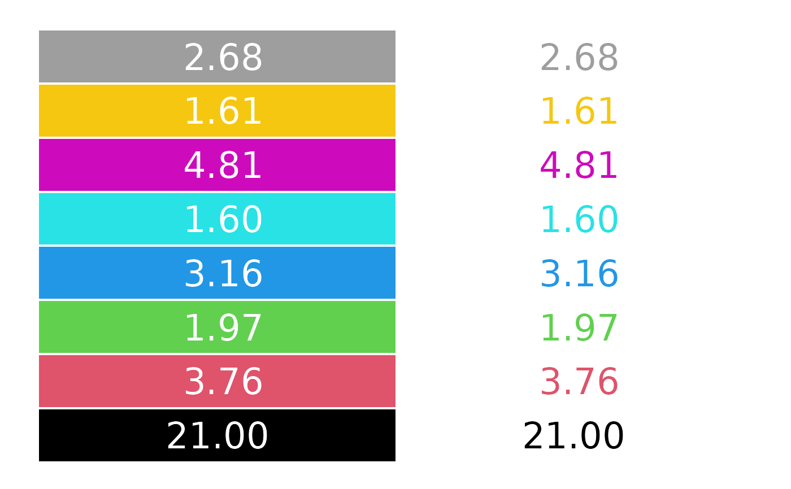
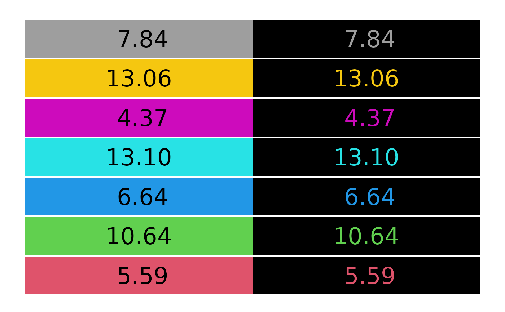

contrast_ratio.RdCompute (and visualize) the contrast ratio of pairs of colors, as defined by the World Wide Web Consortium (W3C).
contrast_ratio( col, col2 = "white", plot = FALSE, border = FALSE, cex = 2, off = 0.05, mar = rep(0.5, 4), digits = 2L, ... )
| col, col2 | vectors of any of the three kind of R colors, i.e., either a color
name (an element of |
|---|---|
| plot | logical indicating whether the contrast ratios should also be visualized by simple color swatches. Can also be a vector of length 2, indicating whether the foreground color should be visualized on the background color and/or the background color on the foreground color. |
| border | logical or color specification for the borders around the color swatches (only
used if |
| cex | numeric. Size of the text in the color color swatches (only if |
| off | numeric. Vertical offset between the different color swatches (only if |
| mar | numeric. Size of the margins around the color swatches (only if |
| digits | numeric. Number of digits for the contrast ratios displayed in the color swatches
(only if |
| ... | further arguments passed to the plot of the color swatches (only if |
A numeric vector with the contrast ratios is returned (invisibly, if plot is TRUE).
The W3C Content Accessibility Guidelines (WCAG) recommend a contrast ratio of at least 4.5 for the color of regular text on the background color, and a ratio of at least 3 for large text. See https://www.w3.org/TR/WCAG21/#contrast-minimum.
The contrast ratio is defined in https://www.w3.org/TR/WCAG21/#dfn-contrast-ratio
as (L1 + 0.05) / (L2 + 0.05) where L1 and L2 are the relative luminances
(see https://www.w3.org/TR/WCAG21/#dfn-relative-luminance) of the lighter and darker
colors, respectively. The relative luminances are weighted sums of scaled sRGB coordinates:
0.2126 * R + 0.7152 * G + 0.0722 * B where each of R, G, and B
is defined as ifelse(RGB <= 0.03928, RGB/12.92, ((RGB + 0.055)/1.055)^2.4) based on
the RGB coordinates between 0 and 1.
W3C (2018). “Web Content Accessibility Guidelines (WCAG) 2.1.” https://www.w3.org/TR/WCAG21/
#> [1] 21.000000 3.758588 1.973030 3.163940 1.603030 4.805641 1.608044 #> [8] 2.679156# visualize contrast ratio of default palette on white and black background contrast_ratio(palette(), "white", plot = TRUE)